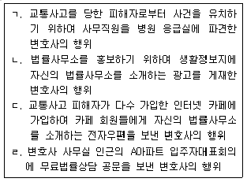
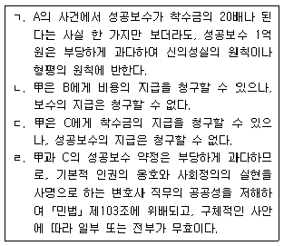
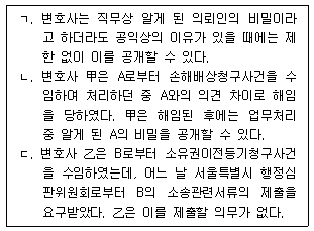
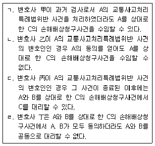

법조윤리 (2018-08-04 기출문제)
1과목: 임의 구분
1. 변호사의 사건 수임 등에 관한 설명 중 옳지 않은 것은? (다툼이 있는 경우 판례에 의함)
- 변호사시험에 합격하여 변호사 자격을 얻은 변호사는 법률사무종사기관에서 통산하여 6개월 이상 법률사무에 종사하거나 연수를 마치지 아니하면 단독으로뿐만 아니라 공동으로도 사건을 수임할 수 없으며 이를 위반할 경우 형사처벌까지 받을 수 있다.
- 변호사는 의뢰인과 대립되는 상대방과 사건의 수임을 위해 상담하였으나 수임에 이르지 아니한 경우에 상대방의 이익이 침해될 우려가 있더라도 의뢰인의 동의가 있으면 사건 수임이 제한되지 않는다.
- 변호사는 수임에 관한 장부를 작성하고 보관하여야 하며 이 장부에 수임일, 수임액, 위임인·당사자·상대방의 성명과 주소, 수임한 법률사건 또는 법률사무의 내용, 수임사건의 관할기관·사건번호 및 사건명, 처리결과 등을 기재하여야 한다.
- 가압류·가처분 등 보전소송사건을 수임한 소송대리인의 소송대리권은 그 사건에 관하여 포괄적으로 미친다고 할 것이므로, 가압류 사건을 수임한 변호사의 소송대리권은 그 가압류신청사건에 관한 소송행위뿐만 아니라 본안의 제소명령을 신청하거나 상대방의 신청으로 발하여진 제소명령결정을 송달받을 권한에까지 미친다.
(정답률: 알수없음)

2. 변호사 甲은 A로부터 B를 상대로 한 X토지에 대한 소유권이전등기말소청구사건을 수임하면서, 착수금 300만 원, 성공보수 1,000만 원으로 하는 보수 약정을 체결하고 착수금을 지급받았다. 한편, 甲과 A는 착수금에 관하여는“소의 취하, 상소의 취하, 화해, 당사자의 사망, 해임, 위임계약의 해지 등 어떠한 사유가 발생하더라도 반환을 청구할 수 없다.”라고 약정하고, 성공보수에 관하여는“A가 소를 취하하는 경우에는 승소로 간주한다.”라고 약정하였다. 이후 甲은 소유권이전등기말소청구의 소를 제기하기 전에 상대방 B에게 이행을 최고하고 형사고소를 제기하는 등의 사무를 처리하였다. 이에 관한 설명 중 옳은 것은? (다툼이 있는 경우 판례에 의함)
- 甲과 A 사이의 보수 약정이 부당하게 과다하여 신의성실의 원칙이나 형평의 원칙에 반한다고 볼 만한 특별한 사정이 있는 경우에는 보수 약정 전체를 무효로 보아야 하며, 위와 같은 특별한 사정의 존재에 대한 증명책임은 약정된 보수액이 부당하게 과다하다고 주장하는 측에 있다.
- A와 B 사이에 재판외화해가 성립되어 결과적으로 甲이 소제기를 할 필요가 없게 되었다면 甲은 착수금 300만 원 전부를 A에게 반환하여야 한다.
- 甲이 성공보수로 1,000만 원이 아닌 X토지의 10% 지분을 넘겨받기로 약정하였더라도 이는 계쟁권리의 양수에 해당하지 않는다.
- 위 소유권이전등기말소청구사건의 제1심에서 원고 패소판결이 선고되었고, 이후 제기한 항소심에서도 객관적인 승소 가능성이 없어 A가 甲과의 상의 없이 항소를 취하하였다면 위 특약에 따라 A는 甲에게 성공보수를 지급하여야 한다.
(정답률: 알수없음)
3. 다음 중 「변호사법」 또는 「변호사업무광고규정」에 위반되는 사례를 모두 고른 것은?

- ㄱ, ㄴ
- ㄱ, ㄷ
- ㄴ, ㄷ
- ㄴ, ㄹ
(정답률: 알수없음)
4. 변호사 甲은 2017. 5. 3. A로부터 소유권이전등기청구사건을 수임하면서 서면으로 착수금 500만 원, 성공보수 1억 원을 약정하고, 2017. 6. 1. B로부터 손해배상청구사건을 수임하면서 보수에 관해 아무런 약정도 하지 않았다. 그리고 2018. 1. 17. 모욕죄로 기소된 피고인 C의 형사사건을 수임하면서 서면으로 착수금 1,000만 원, 성공보수 1억 원을 약정하였다. 甲은 A의 사건과 B의 사건에서는 승소하였고, C의 사건에서는 무죄판결을 받았다. 이에 관한 설명 중 옳은 것을 모두 고른 것은? (다툼이 있는 경우 판례에 의함)

- ㄱ, ㄹ
- ㄴ, ㄷ
- ㄷ
- ㄷ, ㄹ
(정답률: 알수없음)
5. 변호사 보수에 관한 설명 중 옳지 않은 것은? (다툼이 있는 경우 판례에 의함)
- 변호사가 소송사건 위임을 받으면서 지급받는 착수금은 일반적으로 위임사무의 처리비용 외에 보수금 일부의 선급금으로 지급받는 성질의 금원이다.
- 변호사는 사건을 수임하면서 착수금을 정하고 그 지급일을 약정하였다면, 특별한 사정이 없는 한 그 업무개시 여부나 변호인선임서, 위임장의 제출 여부와 상관없이 약정한 지급일에 착수금의 지급을 청구할 수 있다.
- 성공보수 약정이 제1심에 대한 것인 경우에, 보수금의 지급시기에 관하여 당사자 사이에 특약이 없다면 성공보수 지급청구권의 소멸시효는 제1심 판결선고 시부터 진행된다.
- 착수금은 물론이고 성공보수의 경우에도 가급적 서면으로 수임계약을 체결하는 것이 바람직하지만, 구두로 약정한 경우에도 효력이 있다.
(정답률: 알수없음)
6. 변호사의 업무광고로 허용되지 않는 것은?
- 대한변호사협회에 형사법 전문 변호사로 등록된 변호사가 다수 있는 L법무법인이 포털 사이트에 형사 전문 법무법인이라고 광고하는 경우
- 회원이 20명인 과천 꽃꽂이 모임에서 제작하여 그 회원들에게 배포하는 2018년 달력 하단에 L법무법인을 광고하는 경우
- 버스 내 음성 방송으로 정류장 안내와 함께 L법무법인을 광고하는 경우
- 인터넷사이트 운영업체 X가 변호사들에게서 통상적인 광고료를 받아 동영상을 촬영한 후 그 동영상 자료와 변호사들의 학력과 경력 등의 정보를 사이트에 게시하여 법률상담을 원하는 의뢰인이 변호사를 선택하여 법률상담을 받도록 하되, X는 변호사의 선택이나 법률상담에는 전혀 관여하지 않으며 의뢰인으로부터 어떠한 비용도 받지 않는 경우
(정답률: 알수없음)
7. 변호사 甲은 건강 검진을 위해 병원에 갔다가 그 병원에 대형 건물에서 발생한 화재 사고 피해자들이 입원해 있다는 사실을 알게 되었다. 甲은 피해자들 중 아는 사람이 있는 것은 아니었지만 피해자들이 입원해 있는 병실을 방문하였다. 병실에서 화재 사고 피해자 A에게 건물 화재로 인한 손해배상청구소송에 대하여 상담을 해 주었다. 이에 관한 설명 중 옳지 않은 것은?
- 甲이 A에게 손해배상청구소송에 관한 법률상담을 해 주기 위해서는 소속 지방변호사회의 허가를 받아야 한다.
- 甲이 A에게 손해배상청구소송에 관한 법률상담을 해 주는 데 그치지 않고 당해 사건의 의뢰를 권유하였다면 「변호사업무광고규정」 위반이다.
- A가 병원에서 퇴원한 후에 甲의 사무실로 찾아와 건물 화재로 인한 손해배상청구소송을 의뢰한 경우에 甲이 수임하더라도 「변호사업무광고규정」 위반이 아니다.
- 甲이 A에게 ‘다른 피해자들에게도 법률상담을 해 줄 테니 소개시켜 달라’고 했더라도 「변호사업무광고규정」 위반은 아니다.
(정답률: 알수없음)
8. 변호사의 업무광고에 관한 설명 중 옳지 않은 것은?
- 변호사 광고에 관한 심사를 위하여 대한변호사협회와 각 지방변호사회에 광고심사위원회를 둔다.
- 법무법인이 광고를 하는 경우에는 원칙적으로 법무법인의 명칭, 주소, 연락처, 대표 변호사를 표시하여야 한다.
- 대한변호사협회 광고심사위원회 위원장은 「변호사업무광고규정」 위반 여부를 변호사의 심사 요청과는 상관없이 직권으로 조사할 수 있다.
- 광고의 내용과 방법 등에 관하여 의문이 있을 때에는 해당 변호사뿐만 아니라 해당 광고에 이해관계가 있는 자도 해당 변호사 소속 지방변호사회 회장에게 서면으로 질의할 수 있다.
(정답률: 알수없음)
9. 변호사 甲은 A와 위임계약을 체결하고 소송을 수행하던 중, 계쟁토지와 관련된 도시재개발계획에 대한 상세한 정보를 얻게 되었다. 甲은 즉시 해당 도시재개발계획지역 내의 토지를 매입하였다가 소송 종료 후 매각하여 큰 이익을 얻었다. 이에 관한 설명 중 옳지 않은 것은?
- A가 위 정보의 공개를 원하지 않는다면 甲은 이를 누설하지 않아야 한다.
- 甲이 소송 중 알게 된 정보라도 공지의 사실이라면 비밀유지의 대상이 되지 아니한다.
- 위 정보가 비밀이라도 甲이 그 정보를 누설하지 않았다면 甲은 비밀유지의무를 위반한 것이 아니다.
- 甲이 준비서면에 첨부할 입증방법에 해당하는 소송 자료를 직접 정리하지 아니하고 사무직원에게 건네주어 정리하도록 하는 행위는 설사 해당 증거가 비밀과 관련성이 있다고 하더라도 변호사의 직무수행에 필요한 것이므로 허용된다.
(정답률: 알수없음)
10. 변호사의 비밀유지의무에 관한 설명 중 옳은 것은? (다툼이 있는 경우 판례에 의함)
- 현행법상 명문의 규정은 없으나 헌법 제12조 제4항에 의하여 인정되는 변호인의 조력을 받을 권리 중 하나로서 변호인과 의뢰인 사이에서 법률자문을 목적으로 비밀리에 이루어진 의사교환에 대하여 의뢰인은 그 공개를 거부할 수 있는 특권을 가진다.
- 변호사가 작성한 법률의견서는 의뢰인의 동의가 없는 한 압수절차의 위법 여부와 관계없이 형사재판의 증거로 사용할 수 없다.
- 진범이 드러나지 않도록 은폐하는 허위자백을 적극적으로 유지하게 한 행위도 변호인의 비밀유지의무에 의하여 정당화될 수 있다.
- 변호사는 직무를 수행하면서 작성한 서류, 메모, 기타 유사한 자료를 외부에 공개하지 아니한다.
(정답률: 알수없음)
11. 변호사의 비밀유지의무에 관한 설명 중 옳지 않은 것은?
- 공정거래위원회의 조사·심의과정에서 이루어진 변호사와 의뢰인 사이의 의사교환 내용은 비밀보호의 대상이 되지 않는다.
- 변호사는 본인이 제공한 법률사무의 내용에 관한 증언을 해야 하는 경우에 그 사건을 수임할 수 있다.
- 변호사는 직무상 알게 된 의뢰인의 비밀이라도 변호사 자신의 권리를 방어하기 위하여 필요한 경우에는 최소한의 범위에서 이를 공개할 수 있다.
- 변호사 또는 변호사이었던 자는 그 직무상 알게 된 비밀을 누설하여서는 아니 된다. 다만, 법률에 특별한 규정이 있는 경우에는 그러하지 아니하다.
(정답률: 알수없음)
12. 변호사의 비밀유지의무에 관한 설명 중 옳지 않은 것을 모두 고른 것은?

- ㄱ
- ㄱ, ㄴ
- ㄱ, ㄷ
- ㄴ, ㄷ
(정답률: 알수없음)
13. 변호사와 의뢰인의 관계에 관한 설명 중 옳지 않은 것은? (다툼이 있는 경우 판례에 의함)
- 본안소송을 수임한 변호사가 그 소송을 수행함에 있어 강제집행이나 보전처분에 관한 소송행위를 할 수 있는 소송대리권을 가진다고 하여 의뢰인에 대한 관계에서 당연히 그 권한에 상응한 위임계약상의 의무를 부담한다고 할 수는 없고, 변호사가 처리의무를 부담하는 사무의 범위는 변호사와 의뢰인 사이의 위임계약의 내용에 의하여 정하여진다.
- 형사소송에 있어서 피고인 또는 피의자의 법정대리인, 배우자, 직계친족과 형제자매는 법률상 당연히 피고인이나 피의자를 위한 변호인을 독립하여 선임할 수 있다.
- 위임사무의 종료 단계에서 패소판결이 있었던 경우에 변호사는 의뢰인으로부터 상소에 관하여 특별한 수권이 없는 때에도 그 판결을 점검하여 의뢰인에게 불이익한 계산상의 잘못이 있다면 의뢰인에게 그 판결의 내용과 상소하는 때의 승소가능성 등에 대하여 구체적으로 설명하고 조언하여야 할 의무가 있다.
- 변호사는 구체적인 위임사무의 범위를 넘어서서 의뢰인의 재산 등 권리의 옹호에 필요한 모든 조치를 취하여야 할 일반적인 의무를 부담한다.
(정답률: 알수없음)
14. 변호사와 의뢰인의 관계에 관한 설명 중 옳지 않은 것은?
- 변호사는 의뢰인에 대하여 선량한 관리자의 주의의무를 다하여 법률사무를 처리하여야 한다.
- 변호사가 의뢰인과 부동산소유권이전등기청구사건에 관한 위임계약을 체결하면서 승소판결을 받아내는 등 일정한 결과를 발생시켜야 성공보수를 지급하는 것으로 약정하는 것은 사회상규에 반하므로 위법하다.
- 변호사는 의뢰인에 대하여 위임계약의 본래 취지에 따라 의무를 부담하고 이를 이행하지 않으면 손해배상책임을 지는데 사무직원의 과실로 불변기간이 지난 경우에도 변호사의 과실로 인정된다.
- 변호사는 자기 스스로 사무를 처리하는 것이 원칙이나, 의뢰인의 승낙이나 부득이한 사유가 있으면 예외적으로 복위임이 허용된다.
(정답률: 알수없음)
15. L법무법인은 X주식회사를 대리하여 이사의 임무를 게을리하거나 횡령 등으로 회사에 손해를 끼친 이사들에 대한 손해배상청구사건을 진행하고 있다. L법무법인은 이미 이사 A를 상대로 한 손해배상청구소송을 승소 확정으로 종료하였고, 이사 B를 상대로 손해배상청구소송을 진행하고 있으며, 이사 C를 상대로 한 손해배상청구의 소제기를 준비하고 있다. 이러한 상황에서 L법무법인이 X의 동의 없이 할 수 있는 행위는?
- A의 X를 상대로 한 양수금청구사건을 수임하는 행위
- B의 X를 상대로 한 퇴직금청구사건을 수임하는 행위
- 회삿돈을 횡령하여 횡령죄로 재판을 받고 있는 B의 형사사건을 수임하는 행위
- C의 X를 상대로 한, 위 손해배상청구사건들과 기초가 된 분쟁의 실체가 동일한 채무부존재확인청구사건을 수임하는 행위
(정답률: 알수없음)
16. 변호사의 이익충돌회피의무에 관한 설명 중 옳지 않은 것은? (다툼이 있는 경우 판례에 의함)
- 변호사가 부동산 매매계약의 매도인과 매수인으로부터 소유권이전등기신청을 공동으로 위임받아 그 신청을 대리하는 것은 허용되지 않는다.
- 변호사는 배우자인 변호사가 수임하고 있는 사건의 대립되는 당사자로부터도 의뢰인의 동의가 있으면 사건을 수임할 수 있다.
- 수임한 사건의 상대방이 위임하는 사건에 대한 변호사의 소송대리행위는 상대방 당사자가 이 사실을 알았거나 알 수 있었음에도 불구하고 사실심 변론종결시까지 아무런 이의를 제기하지 않았다면 그 소송행위는 소송법상 완전한 효력이 생긴다.
- 변호사가 조정위원으로 취급한 사건은 의뢰인과 상대방이 모두 동의한 경우에도 수임할 수 없다.
(정답률: 알수없음)
17. 변호사의 이익충돌회피의무에 관한 설명 중 옳지 않은 것은? (다툼이 있는 경우 판례에 의함)
- 변호사에게 이익충돌회피의무를 요구하는 근거로 변호사의 의뢰인에 대한 성실의무를 들 수 있다.
- 변호사의 비밀유지의무도 이익충돌회피의무의 근거가 된다.
- 동일한 변호사가 형사사건에서 피고인을 위한 변호인으로 선임되어 변호활동을 하였다가 나중에 실질적으로 동일한 쟁점을 포함하고 있는 민사사건에서 위 형사사건의 피해자인 상대방의 소송대리인으로서 소송행위를 하는 것은 금지된다.
- 동일 사건에서 둘 이상의 의뢰인의 이익이 서로 충돌하더라도 변호사는 관계되는 의뢰인들이 모두 동의하기만 하면 둘 이상의 의뢰인을 동시에 대리할 수 있다.
(정답률: 알수없음)
18. 변호사와 의뢰인의 관계에 관한 설명 중 옳은 것은?
- 변호사는 의뢰인의 구체적인 수권 없이도 조정으로 사건을 종결시킬 수 있다.
- 변호사는 상대방 대리인과 친족관계에 있어도 이를 미리 의뢰인에게 알리면 사건을 수임할 수 있다.
- 변호사는 수임한 사건의 처리가 종료되면 위임관계가 종료되므로 의뢰인에게 그 결과를 설명할 의무는 없다.
- 변호사는 의뢰인의 요청이나 요구가 변호사의 품위를 손상시키거나 의뢰인의 이익에 배치된다고 인정하는 경우에는 그 이유를 설명하고 이에 따르지 않을 수 있다.
(정답률: 알수없음)
19. 변호사 아닌 자가 한 다음 행위 중 「호사법」 위반이 아닌 것은? (다툼이 있는 경우 판례에 의함)
- 甲은 직장 동료 A로부터 금품을 받기로 하고 업무처리를 위한 방편으로 형식적으로 A의 관련 채권 및 근저당권을 양수하여 자기 명의로 경매신청, 채권신고 등의 행위를 하였다.
- 법무사 사무실의 직원인 乙은 경매대상 부동산의 낙찰을 희망하는 사람들을 위해 경매절차의 전 과정에 관여하여 경매부동산을 낙찰받도록 해 주는 등 경매입찰을 사실상 대리하여 주고 그 수수료 명목으로 돈을 받았다.
- 오랫동안 변호사 사무실에서 사무장으로 근무하다가 은퇴한 丙은 법률적 지식이 없거나 부족한 지인들을 위하여 사실상 사건의 처리를 주도하면서 실질적으로는 대리인처럼 소송서류를 작성하여 주고 소송기일에서의 행위를 조언하여 왔으나, 자신이 도와준 사람들로부터 받은 돈이 통상적인 변호사보수의 1/5에 미치지 않았고 형식적으로는 본인인 지인들이 직접 소송행위를 하는 것처럼 하였다.
- 경찰관인 丁은 민사소송 과정에서 감정이 생겨 발생한 폭력사건의 피의자를 근무지인 지구대로 임의동행한 다음 그 사건을 경찰서로 인계하는 과정에서 피의자의 가족으로부터 선처해 달라는 부탁과 함께 100만 원을 받았다.
(정답률: 알수없음)
20. 변호사와 의뢰인의 관계에 관한 설명 중 옳은 것은? (다툼이 있는 경우 판례에 의함)
- 변호사의 의뢰인에 대한 각종 의무는 변호사가 선임을 승낙한 시점이 아니라 착수금 등 보수의 일부를 지급받는 시점부터 발생한다.
- 변호사는 의뢰인과 위임관계에 있으므로 선량한 관리자의 주의로써 위임사무를 처리하여야 하고 의뢰인의 지휘·감독을 받는다.
- 변호사는 심급대리의 원칙상 판결서를 송달받아 그 결과에 대하여 의뢰인에게 신속히 설명함으로써 위임사무가 종결되며 의뢰인에 대한 모든 권리·의무가 소멸된다.
- 변호사는 의뢰인의 동의 없이 의뢰인과의 위임계약을 해지할 수 있으나, 부득이한 사유 없이 의뢰인이 불리한 시기에 위임계약을 해지한 때에는 그 손해를 배상하여야 한다.
(정답률: 알수없음)
2과목: 임의 구분
21. 변호사와 의뢰인의 관계에 관한 설명 중 옳지 않은 것은? (다툼이 있는 경우 판례에 의함)
- 변호사는 수임하려는 사건이 의뢰인의 범죄행위를 목적으로 한 사건인 경우 수임을 거절하여야 한다.
- 변호사는 의뢰인의 지시가 위임의 취지에 적합하지 않거나 의뢰인에게 불리한 경우에 그러한 사실을 의뢰인에게 고지할 뿐만 아니라, 나아가 의뢰인이 한 지시의 변경을 요구 또는 권고할 수 있다.
- 의뢰인은 변호사에 대하여 보수를 지급할 의무를 부담하며, 특별한 약정이 없는 한 변호사의 청구에 의하여 비용을 선급할 의무를 진다.
- 국선변호인 등 관련 법령에 따라 국가기관에 의하여 선임된 변호사는 의뢰인의 요청이 있더라도 사선으로 전환하여서는 아니 된다.
(정답률: 알수없음)
22. 법조윤리협의회에 관한 설명 중 옳은 것은?
- 퇴직공직자가 법무법인에 취업한 경우 법무법인은 취업한 퇴직공직자의 명단과 업무내역서를 법조윤리협의회에 제출하여야 한다.
- 공직퇴임변호사는 퇴직일부터 2년 동안 수임한 사건에 관한 수임 자료와 처리 결과를 법조윤리협의회에 제출하여야 한다.
- 지방변호사회는 변호사법령상 일정 수 이상의 사건을 수임한 특정변호사의 성명과 사건목록을 법조윤리협의회에 제출하여야 한다.
- 지방변호사회는 공직퇴임변호사에게 「변호사법」 제91조에 따른 징계사유나 위법의 혐의가 있는 것을 발견하였을 때에 법조윤리협의회의 위원장에게 그 변호사에 대한 징계개시를 신청할 수 있다.
(정답률: 알수없음)
23. X회사는 A를 상대로 소유권이전등기청구의 소를 제기하기 위해 L법무법인을 소송대리인으로 선임하였다. L법무법인은 담당 변호사로 甲을 지정하였다. 그 뒤 A는 B를 상대로 대여금청구의 소를 제기하고 L법무법인에 소송대리를 위임하고자 한다. 한편 C는 D에 대한 교통사고로 인한 손해배상청구소송을 준비하고 있고 L법무법인을 소송대리인으로 선임하고자 한다. 이에 관한 설명 중 옳지 않은 것은?
- X의 동의가 있으면 L법무법인은 A로부터 대여금청구사건을 수임할 수 있다.
- 甲이 대여금청구사건의 수임 및 업무수행에 관여하지 않고 A가 소유권이전등기청구소송의 상대방 당사자라는 사정이 L법무법인의 사건처리에 영향을 주지 아니할 것이라고 볼 수 있는 합리적인 사유가 없으면 L법무법인은 X의 동의가 있더라도 A로부터 사건을 수임할 수 없다.
- L법무법인에는 D의 처 乙이 변호사로서 근무하고 있다. 乙이 C의 손해배상청구사건의 수임 및 업무수행에 관여하지 않고 L법무법인의 변호사로서 근무하고 있다는 사정이 법무법인의 사건처리에 영향을 주지 아니할 것이라고 볼 수 있는 합리적인 사유가 있을 때에는 L법무법인은 C로부터 사건을 수임할 수 있다.
- 과거 L법무법인이 C, D가 관련된 위 교통사고 사건에서 피의자인 D의 변호인으로 활동한 일이 있었다면 이번 손해배상청구소송에서 D의 동의를 얻은 경우에도 C로부터 위 손해배상청구사건을 수임할 수 없다.
(정답률: 알수없음)
24. A는 자신의 친구 B 소유의 자동차를 운전하던 중, 중앙선을 침범하여 반대차로의 운전자 C에게 중상을 입혔다. A는 B의 승낙을 얻어 운전하였다고 주장하고 있으나 B는 A가 자기 몰래 자동차 열쇠를 훔쳐 가 운전한 것이라고 주장하고 있다. C는 위 사고를 원인으로 한 손해배상청구소송을 준비하고 있다. 변호사의 수임 제한에 관한 설명 중 옳은 것을 모두 고른 것은? (다툼이 있는 경우 판례에 의함)

- ㄱ, ㄴ
- ㄴ, ㄷ
- ㄴ, ㄹ
- ㄷ, ㄹ
(정답률: 알수없음)
25. A는 피해자 B 소유의 골동품을 절취한 혐의로 수원지방검찰청 소속 검사 甲에게 조사를 받던 중 변호사 乙을 변호인으로 선임하였다. 그 후 A는 절도죄로 기소되어 법관 丙이 재판 중이다. 이에 관한 설명 중 옳지 않은 것은?
- 甲은 A가 변호인을 선임하기 전에 방어권 행사에 다소 어려움을 겪는 것을 보고 자신의 선배인 乙을 선임해 보라고 권유하였는데, 이는 검사윤리에 위배된다.
- 甲은 A가 훔친 물건이 사회적으로 주목을 받는 삼국시대의 문화재임을 알게 된 경우, 검사의 직함을 사용하여 대외적으로 그 수사내용을 공표하려면 검찰총장의 승인을 받아야만 한다.
- 丙은 사건과 관련된 이야기를 전혀 하지 않더라도 乙과 함께 골프를 쳐서는 아니 된다.
- 甲은 B로부터 골동품을 찾아 줘서 감사하다는 이유로 시가 1만 원 상당의 음료수 세트를 받아서는 아니 된다.
(정답률: 알수없음)
26. 외국법자문사 등에 관한 설명 중 옳은 것은?
- 자유무역협정등의 당사국에 5년 이상 본점사무소가 설립·운영되고 있는 외국법자문법률사무소는 사전에 대한변호사협회에 공동사건처리등을 위한 등록을 하지 않더라도 법무법인과 국내법사무와 외국법사무가 혼재된 법률사건을 사안별 개별 계약에 따라 공동으로 처리하고 그 수익을 분배할 수 있다.
- 변호사 甲은 미국 뉴욕주 변호사 자격을 취득한 뒤 뉴욕의 법률사무소에서 10개월 동안 근무하였다. 그 뒤 甲은 귀국하여 국내 법무법인 A에서 2년 2개월 동안 미국 뉴욕주 법의 조사·연구 등에 관한 사무를 수행하고 있다. 甲은 외국법자문사 자격승인을 받을 수 있다.
- 외국법자문법률사무소의 설립인가를 받기 위해서는 본점사무소가 자유무역협정등의 당사국에서 그 나라의 법률에 따라 적법하게 설립되어 5년 이상 정상적으로 운영되었어야 한다.
- 외국법자문법률사무소를 운영하기 위해서는 법무부장관의 설립인가통지를 받은 날로부터 3개월 이내에 대한변호사협회에 등록신청을 하여야 한다.
(정답률: 알수없음)
27. 변호사와 타 직역 사이의 업무범위에 관한 설명 중 옳은 것은? (다툼이 있는 경우 판례에 의함)
- 부동산 중개는 법률문제가 발생되는 행위이므로 당연히 변호사의 업무에 포함된다.
- 변호사는 변리사 등록을 하지 않고 특허 등의 업무를 할 수 있으나, 변리사로서 업무를 하려는 경우에는 변리사 등록을 하여야 하고, 등록한 변리사는 변리사회에 가입하여야 한다.
- 세무대리업무는 법률사무가 아니므로 변호사의 업무에 포함되지 않는다.
- 변리사는 변호사가 아니더라도 지적재산권 사건에 관한 소송대리가 허용되므로 특허침해에 따른 손해배상청구소송을 대리할 수 있다.
(정답률: 알수없음)
28. 변호사에 대한 징계절차에 관한 설명 중 옳은 것은?
- 대한변호사협회 변호사징계위원회는 「변호사법」 소정의 기관장으로부터 징계개시의 청구를 받아야만 변호사에 대한 징계절차를 개시할 수 있다.
- 대한변호사협회의 장은 확정된 징계처분의 내용을 인터넷 홈페이지에 게재하는 등 공개하여야 하고, 소속 지방변호사회 및 징계혐의자에게 통지하여야 하나, 법무부장관에게 보고할 필요는 없다.
- 징계혐의자가 대한변호사협회 변호사징계위원회 위원장의 출석명령을 받고 징계심의기일에 출석하지 않은 경우 위 징계위원회는 서면으로 심의절차를 진행할 수 있다.
- 대한변호사협회 변호사징계위원회의 변호사에 대한 징계의 효력은 징계혐의자가 징계결정의 통지를 받은 후 30일 이내에 대한변호사협회 변호사징계위원회에 이의신청을 하지 아니하면 그 다음 날부터 발생한다.
(정답률: 알수없음)
29. 변호사 징계에 관한 설명 중 옳은 것은?
- 징계의 종류에는 영구제명, 제명, 3년 이하의 정직, 5천만 원 이하의 과태료, 견책의 5가지가 있다.
- 변호사의 직무와 관련하여 2회 이상 금고 이상의 형을 선고받아 그 형이 확정된 경우는 영구제명의 징계사유가 되나, 집행유예를 선고받은 경우와 과실범의 경우는 제외한다.
- 대한변호사협회 변호사징계위원회에 징계개시의 청구를 할 수 있는 사람은 지방검찰청 검사장, 지방변호사회의 장, 법조윤리협의회 위원장이다.
- 법무부장관은 업무정지 기간 중인 변호사에 대한 공판 절차나 징계 절차의 진행 상황에 비추어 등록취소·영구제명 또는 제명에 이르게 될 가능성이 크지 아니하고, 의뢰인이나 공공의 이익을 침해할 구체적인 위험이 없어졌다고 인정할 만한 상당한 이유가 있으면 직권으로 그 명령을 해제할 수 있다.
(정답률: 알수없음)
30. 공직재직 시 자신이 취급하거나 취급하게 된 사건이 아닌 경우에 변호사의 사건 수임 제한에 관한 설명 중 옳지 않은 것은?
- 장기복무 군법무관으로 근무하다 퇴직하여 변호사 개업을 한 자는 퇴직 1년 전부터 퇴직할 때까지 근무한 군사법원이 처리하는 사건을 퇴직한 날부터 1년 동안 수임할 수 없다.
- 퇴직 1년 전부터 서울중앙지방법원에서 판사로 근무하다 퇴직하여 변호사 개업을 한 자는 퇴직한 날부터 1년이 경과되지 않았다 하더라도 서울중앙지방검찰청에서 피의자로 수사 받고 있는 사돈의 사건을 수임할 수 있다.
- 퇴직 1년 전부터 부산지방검찰청에서 검사로 근무하다 퇴직하여 변호사 개업을 한 자는 퇴직한 날부터 1년이 경과되지 않았다 하더라도 부산고등법원이 처리하는 사건을 수임할 수 있다.
- 법무법인은 수원지방법원에서 판사로 근무하다 퇴직한 자를 구성원 변호사로 영입할 수는 있지만 그 변호사가 퇴직한 날부터 1년 동안은 수원지방법원이 처리하는 사건의 담당 변호사로 지정할 수 없다.
(정답률: 알수없음)
31. 변호사 甲은 절도혐의로 구속된 피고인 A의 변호인으로 선임되어 접견하였는데, A는 甲에게 자신의 범행을 인정하면서도 현재 수사기관에 확보된 물증이 없다고 하면서 무죄변론을 요청하였다. 또한 A는 절취한 물건을 자신의 애인인 B에게 맡겨 두었으니 그 물건을 폐기해 달라고 전해 주기를 부탁하면서 만일 그렇게 된다면 범행의 물증이 없어지게 되어 자신은 무죄가 될 수 있을 것이라고 말하였다. 이에 관한 설명 중 옳지 않은 것은?
- 甲이 A를 위하여 무죄변론을 한다면 변호사윤리 위반이다.
- 甲이 B에게 연락하여 절취한 물건을 폐기하는 것을 도와주면 변호사윤리 위반이다.
- 甲이 A에게 그 자신 및 친족 또는 동거가족이 장물을 폐기하면 증거인멸죄로 처벌을 받지 않지만, 그 외의 사람이 장물을 폐기하면 처벌을 받을 수 있다고 설명하는 것은 변호사윤리 위반이 아니다.
- 甲이 양심상 도저히 A의 요청을 들어줄 수가 없어서 사임을 하더라도 변호사윤리 위반이 아니다.
(정답률: 알수없음)
32. 변호사 연수의무에 관한 설명 중 옳지 않은 것은?
- 변호사 연수는 일반연수와 특별연수로 구분되며, 특별연수는 자체연수, 위임연수, 위탁연수, 인정연수로 나뉜다.
- 의무연수는 의무전문연수와 의무윤리연수로 나눠지며 현장연수를 원칙으로 한다.
- 인정연수로 지정받고자 하는 학술단체의 경우 출석 관리 등의 연수관리 계획을 연수 실시 30일 전까지 대한변호사협회에 제출하여야 한다.
- 의무연수 이수시간은 의무전문연수의 경우 1년 7시간을 기준으로, 의무윤리연수의 경우 1년 2시간을 기준으로 각 연수주기에 맞추어 비례적으로 계산한다.
(정답률: 알수없음)
33. 변호사의 공익활동에 관한 설명 중 옳은 것은?
- 변호사는 연간 40시간 이상 공익활동을 해야 한다.
- 자선단체, 시민운동단체 등 공익단체에 대하여 무료로 법률서비스를 제공하는 것은 공익활동이나, 상당히 저렴하더라도 비용을 받으면 공익활동으로 인정되지 않는다.
- 국선변호인으로 활동하는 것은 공익활동이나, 국선대리인으로 활동하는 것은 공익활동으로 볼 수 없다.
- 법무법인은 구성원 변호사 및 소속 변호사 전원을 대신하여 공익활동을 수행할 변호사를 지정할 수 있다.
(정답률: 알수없음)
34. X주식회사는 부동산 개발 및 주택 분양을 목적으로 하는 비상장회사로서 법률 분쟁의 사전 예방 및 조기 해결을 위해 법무팀을 신설하고 변호사 甲을 법무팀장으로, 변호사 乙을 이사로 영입함과 아울러 변호사 丙을 감사로 선임하였는데 甲, 乙, 丙 모두 변호사 개업신고를 한 상태이다. 이에 관한 설명 중 옳지 않은 것은?
- 甲이 소속 지방변호사회의 겸직허가를 받았다면 甲은 X주식회사의 사건을 수임하여 소송대리 업무를 수행할 수 있다.
- 乙이 소속 지방변호사회의 겸직허가를 받지 않았다면 X주식회사의 이사로 취임할 수 없다.
- 乙이 L법무법인의 구성원 변호사가 아닌 소속 변호사라면 일주일 중 2일은 위 법무법인에서 근무하고, 나머지 3일은 소속 지방변호사회의 겸직허가를 받아 X회사에서 사내변호사로 근무할 수 있다.
- 丙은 소속 지방변호사회의 겸직허가를 받지 않고도 X주식회사의 감사로 취임하는 것이 허용된다.
(정답률: 알수없음)
35. 사내변호사의 권리와 의무에 관한 설명 중 옳지 않은 것은?
- 개업 신고를 한 사내변호사의 경우에도 변호사로서의 독립성을 유지하여야 하고 비밀유지의무를 준수하여야 한다.
- 사내변호사가 사용자의 지시나 방침에 따라 사용자의 고객이나 제3자의 사건을 수임하는 것은 허용되지 않는다.
- 창업컨설팅을 주된 업으로 하는 주식회사에 고용된 변호사가 회사의 홈페이지를 방문한 유료회원들의 법률 관련 질문에 변호사 명의로 답변하면 「변호사법」에 위반된다.
- 창업컨설팅을 주된 업으로 하는 주식회사에 고용된 변호사가 회사의 홈페이지를 방문한 유료회원들의 법률 관련 질문에 회사 명의로 답변하면 「변호사법」에 위반되지 않는다.
(정답률: 알수없음)
36. 고교 선배인 A가 대표이사로 있는 회사에 사내변호사로 취업한 변호사 甲은 A가 정부 추진의 새로운 인가 사업에 진출하기 위해 담당 공무원에게 정기적으로 뇌물을 제공하고 있다는 사실을 알게 되었다. 이에 관한 설명 중 옳은 것은?
- 甲은 그가 속한 회사의 이익을 위하여 성실히 업무를 수행해야 하므로 A를 도와 직접 담당 공무원에게 뇌물을 제공할 수 있다.
- 甲은 독립적으로 직무를 수행하여야 하므로 A의 법 위반 사실을 발견한 경우 즉시 수사기관에 통보하거나 언론에 공개하여야 한다.
- 甲은 변호사윤리의 범위 안에서 충실의무가 있으므로 A의 뇌물제공행위에는 가담하지 않은 채 범죄행위가 드러나지 않도록 A에게 법적인 조언을 할 수 있다.
- 甲은 이사회에 A의 뇌물제공행위를 알린 후 이사회에서 그에 대한 어떠한 조치도 취하지 않을 경우 사직할 수 있다.
(정답률: 알수없음)
37. 형사변호인의 윤리에 관한 설명 중 옳지 않은 것은? (다툼이 있는 경우 판례에 의함)
- 변호사는 위증을 교사하거나 허위의 증거를 제출하게 해서도 안 되지만 이러한 의심을 받을 행위도 하지 않아야 한다.
- 형사변호인이 피고인 또는 피의자에게 진술거부권이 있음을 알려 주고 그 행사를 권고하면 진실의무에 위배될 수 있다.
- 형사변호인의 기본적인 임무가 피고인 또는 피의자를 보호하고 그의 이익을 대변하는 것이라고 하더라도, 그러한 이익은 법적으로 보호받을 가치가 있는 정당한 이익으로 제한된다.
- 변호사는 피고인의 범행에 대한 사회 일반의 비난 정도가 강하다는 이유만으로 수임을 거절할 수 없다.
(정답률: 알수없음)
38. 대리인 있는 상대방 당사자와의 교섭 등에 관한 설명 중 옳은 것은?
- 변호사는 상대방 당사자를 직접 접촉하거나 교섭할 수 없으나, 사무직원을 시켜 상대방 당사자와 접촉하거나 교섭하는 것은 허용된다.
- 변호사를 선임한 의뢰인은 상대방 당사자를 직접 접촉하거나 교섭할 수 있다.
- 변호사는 상대방 당사자가 법인인 경우 법인의 전·현직 임직원 누구와도 직접 접촉하거나 교섭할 수 없다.
- 변호사는 의뢰인이 동의한 경우에 상대방 당사자와 직접 접촉하거나 교섭할 수 있다.
(정답률: 알수없음)
39. 법무법인에 관한 설명 중 옳지 않은 것은?
- 법무법인은 수임이 제한되는 사건을 수임하지 않도록 의뢰인, 상대방 당사자, 사건명 등 사건 수임에 관한 정보를 관리하고, 해당 사건에 관한 정보는 개인정보에 해당하므로 최초 상담자 아닌 다른 구성원 변호사들이 사건 수임에 관한 정보를 공유할 수 없도록 적절한 조치를 취하여야 한다.
- 법무법인의 구성원이었거나 구성원 아닌 소속 변호사이었던 자는 법무법인의 소속 기간 중 그 법인이 상의를 받아 수임을 승낙한 사건에 관하여는 변호사의 업무를 수행할 수 없다.
- 법무법인이 구성원 아닌 소속 변호사를 업무 담당 변호사로 지정할 때에 내부적으로 구성원이 그 담당 변호사를 지휘하도록 하는 것만으로는 부족하고 구성원과 공동으로 지정하여야 한다.
- 법무법인의 소속 변호사는 그 업무수행이 ｢변호사윤리장전｣에 위반되는 것인지 여부에 관하여 이견이 있는 경우, 그 업무에 관하여 구성원 변호사의 합리적인 결론에 따른 때에는 해당 규정을 준수한 것으로 본다.
(정답률: 알수없음)
40. 변호사 甲은 의료법위반혐의로 긴급체포되어 수사를 받고 있던 피의자 A의 형사사건을 수임한 후, 변호인선임서를 제출하지 않은 채로 담당 검사와 사건과 관련된 전화 통화를 하였고, 변호인선임서는 공소제기 후에 법원에 제출하였다. 이러한 甲의 변론활동은 정당한가?
- 정당하다. A가 긴급체포된 상태로 수사를 받고 있어 신속히 변론활동을 시작할 필요성이 있는 경우에는 변호인선임서를 사후에 제출할 수 있기 때문이다.
- 정당하다. 형사사건에서 변호인선임서는 수사기관이나 법원 어느 한쪽에만 제출하면 되기 때문이다.
- 정당하지 않다. 변호인이 변호인선임서를 제출하지 아니하고는 변론활동을 할 수 없기 때문이다.
- 정당하지 않다. 변호인선임서의 제출 여부와 관계없이 전화 변론은 허용되지 않기 때문이다.
(정답률: 알수없음)